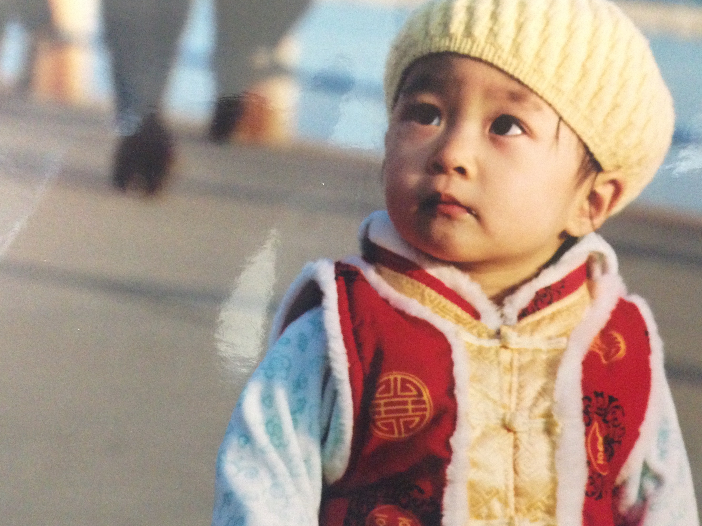

Photography
첫 번째 사진 기록
September 7, 2026

Busan, Korea
Photography
2026. 09. 07
사진을 가끔 찍는다. 자주 카메라를 들고 다니는 것은 아니지만, 어떤 순간에는 그냥 지나치기 아쉬워 카메라를 꺼내게 된다.
시간이 지나 사진을 다시 바라보면 사진 속 풍경보다 그날의 공기와 내가 무엇을 하고 있었는지가 먼저 떠오르기도 한다.
평범했던 순간도 기록하면
언젠가는 하나의 이야기가 된다.
이곳에는 그런 사진들을 조금씩 남겨보려고 한다. 잘 찍은 사진만을 모으기보다는 내가 바라봤던 순간들을 기록하는 공간으로 만들고 싶다.